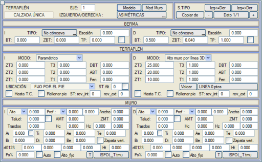
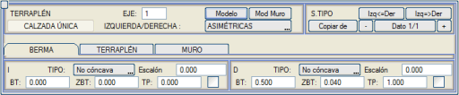

| |
|
DOLGU KESİTİ
|
Bu menü, farklı yarma kesitlerini çok kapsamlı bir şekilde tanımlamaya olanak tanır: Genel Bilgiler
Kaplama Palyesi Dolgu Geometrisi Parametrik Tanım
DuvarlarVektörel Tanım Dolgu kesiti uygulama modları Alternatif Tip Kesit Gelişmiş Tanımlar Genel Bilgiler  Yarma için diyalog kutusuna benzer şekilde, oluşturulan farklı tip kesitler için dolgu durumunda kesit tanımı mevcuttur. Yarma için diyalog kutusuna benzer şekilde, oluşturulan farklı tip kesitler için dolgu durumunda kesit tanımı mevcuttur.Dolgu kesiti üç alt bölüme ayrılır: palye, şev ve duvar; sonuncusu, dolgu yüksekliği kesiti tamamlamak için yeterli olmadığında uygulanır.  Yan menüdeki [Uzun Menü EVET/hayır] düğmesiyle, DOLGU menüsünün görüntülenme şekli değiştirilir; ya tüm veriler birlikte (uzun): Yan menüdeki [Uzun Menü EVET/hayır] düğmesiyle, DOLGU menüsünün görüntülenme şekli değiştirilir; ya tüm veriler birlikte (uzun):
Veya daha fazla çizim alanı bırakan sekmelerle sıralanmış (kısa): 
|